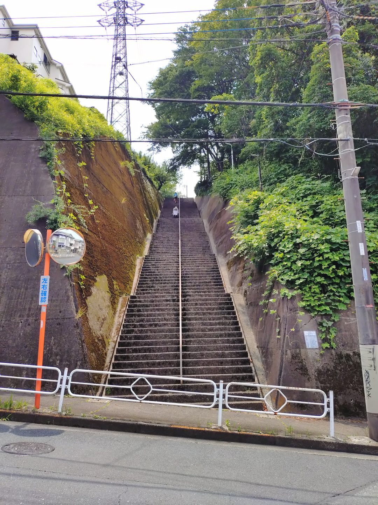
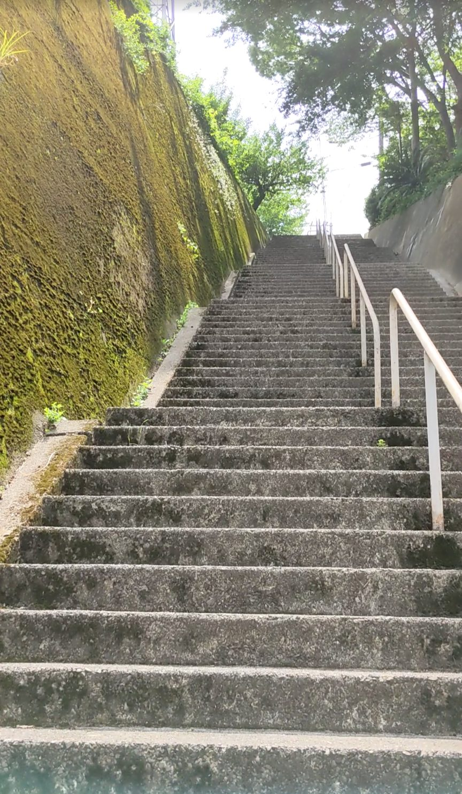
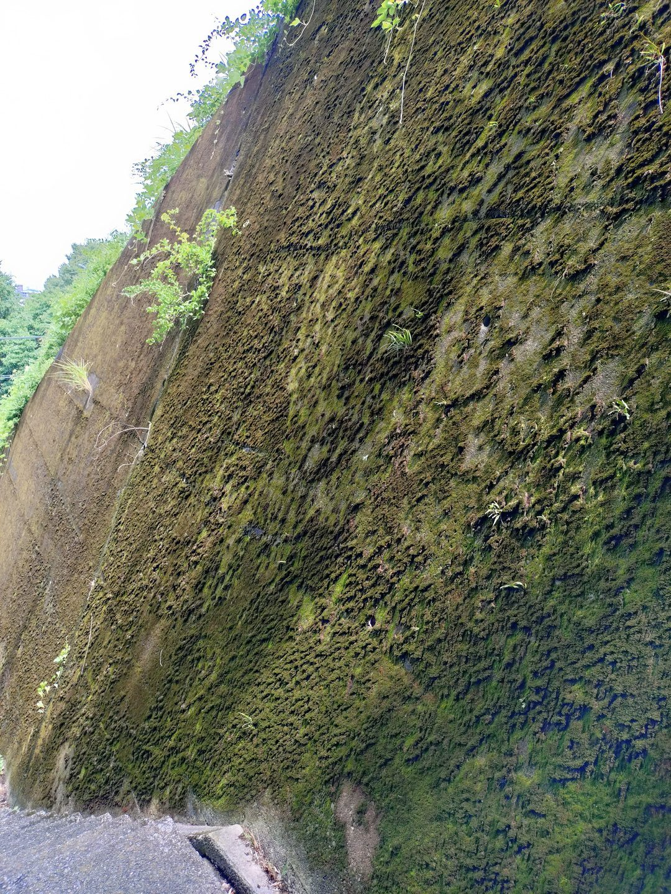
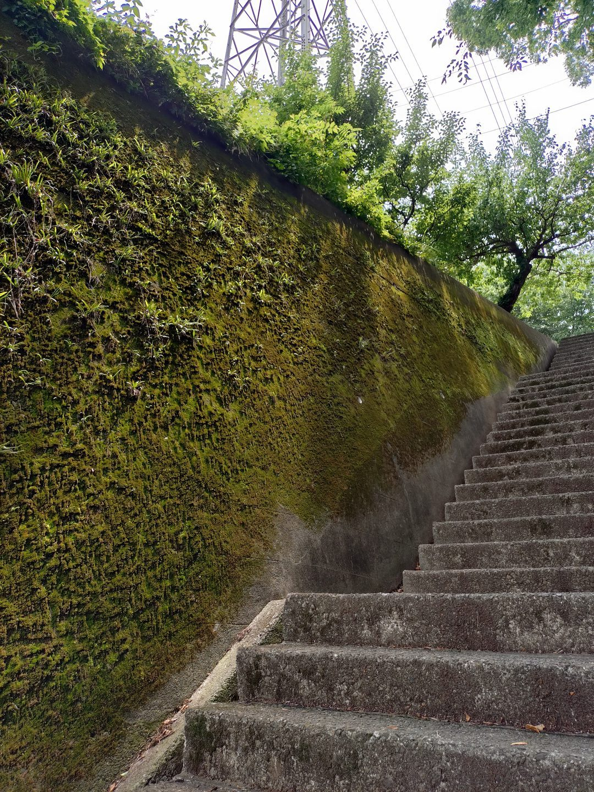
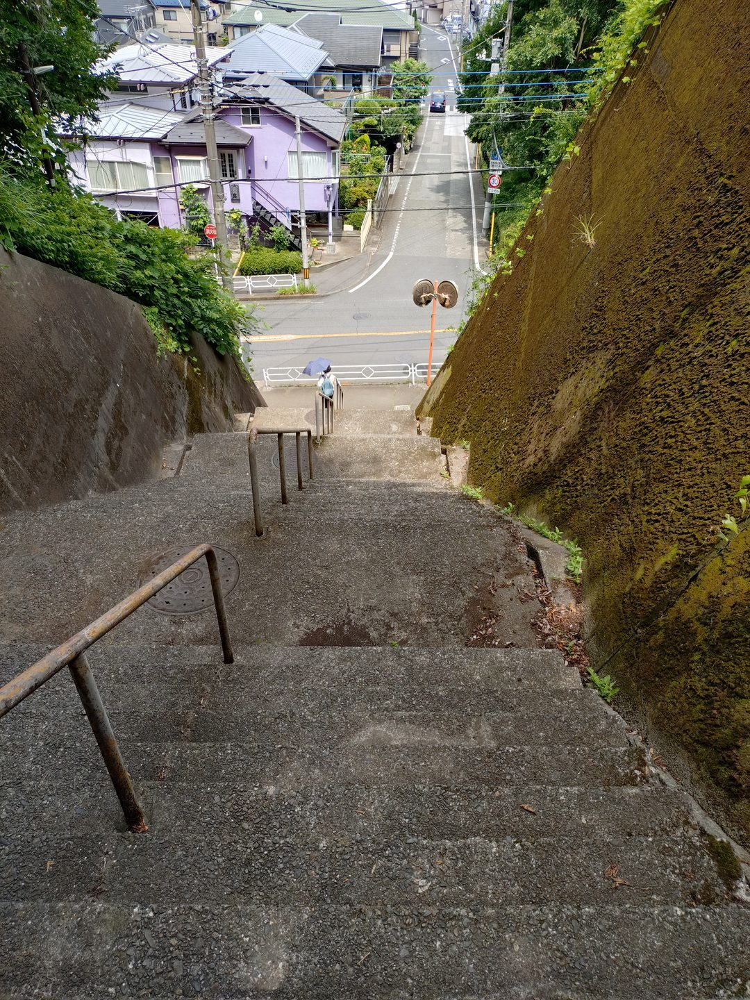

東京都日野市の日野緑地付近にある「百段階段」は、低地と高地を結ぶように絶壁を切り出した形の110段の石段です。京王線の高幡不動駅から徒歩約30分。少し距離はありますが、ここでしか見られない景色がある、個性的な石段です。壁の片側にびっしりと生えたコケと、コケのない反対側との鮮やかなコントラストが、この階段の最大の見どころです。
京王線「高幡不動駅」下車、徒歩約30分。日野緑地のエリアを目指して進みます。距離があるため、自転車やバスの利用も検討してみてください。
石段は高さが高めで急勾配です。グリップのある歩きやすい靴が必須です。コケや草が付着した箇所は特に滑りやすいのでご注意ください。雨上がりは石段全体が滑りやすくなります。
日野緑地のあたりを歩いていくと、まるで絶壁を切り出したような石段が現れます。両側を壁に挟まれた構造で、その片側にはコケがびっしりと生えています。反対側の壁にはコケが生えておらず、この左右の違いが目を引きます。緑地の中にいるのだということを、このコケの存在が静かに教えてくれているようでした。

石段自体は形が整っていますが、表面にはゴツゴツとした質感があり、ところどころに草やコケが付着しています。その荒々しい素材感が、コケの壁や周囲の木々の緑とよく合っています。「緑の階段」という言葉がそのまま当てはまる景色で、人工物と自然がうまく溶け合っていると感じました。

壁のコケをよく見ると、その密度と緑の濃さに圧倒されます。岩肌を覆い尽くすように広がっていて、自然の力強さを感じます。日野緑地という場所の環境が、このコケの豊かさをつくっているのだと思います。


110段を登り切って振り返ると、石段の急勾配がよくわかります。段差が高めで勾配もしっかりあったことが、上から見ると一目瞭然です。そして視線を少し広げると、住宅街の屋根が広がっています。緑地の絶壁の石段と、その先に広がる生活感のある街並みとのギャップが、なんとも面白い対比です。
